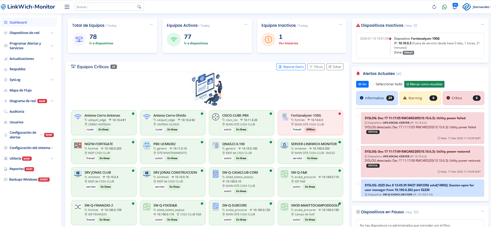

01
Monitoreo ICMP
Validación de disponibilidad por ping, estado en línea/offline e histórico de cortes.

Solución profesional para empresas que necesitan visibilidad en tiempo real, alertas proactivas, mapas automáticos, syslog, respaldos, reportes y acceso remoto seguro desde una sola plataforma.

LinkWich-Monitor centraliza monitoreo, diagnóstico, alertamiento, respaldos, reportes y administración remota para que el equipo de TI tenga una visión clara de lo que sucede en la infraestructura.
Está pensado para hoteles, residenciales, corporativos, escuelas, retail e infraestructuras donde la continuidad operativa es clave. La plataforma puede ajustarse de forma modular según el alcance del cliente y la viabilidad técnica.
Identifica fallas antes de que escalen y reduce tiempos de reacción en incidentes críticos.
Mapas LLDP, geolocalización y visualización de enlaces para entender cómo está conectada la red.
Roles, 2FA, auditoría de usuarios y registro de sesiones de terminal para mayor control.
Dashboards, históricos, reportes PDF/Excel y métricas para capacidad, SLA y gestión ejecutiva.
Una plataforma modular para monitoreo, alertas, diagnóstico, seguridad, reportes y administración de infraestructura TI.
Validación de disponibilidad por ping, estado en línea/offline e histórico de cortes.
Lectura de métricas de switches, routers, servidores, UPS y equipos compatibles.
Tráfico por interfaz, consumo, utilización, gráficas e históricos de bandwidth.
Seguimiento de recursos críticos para detectar saturación o crecimiento de capacidad.
Supervisión de servicios TCP/UDP, IIS, procesos y disponibilidad de servicios críticos.
KPIs, tarjetas, gráficas, disponibilidad, top de interfaces y resumen operacional.
Administración de dispositivos, grupos, ubicaciones, marcas, licencias y datos técnicos.
Alertas por disponibilidad, SNMP, interfaces, servicios, almacenamiento, UPS y syslog.
Correo, WhatsApp, popups, campana interna y persistencia de eventos relevantes.
Recepción, filtrado, severidad, reglas y trazabilidad de eventos de red.
Explicación asistida de logs para acelerar diagnóstico y análisis operativo.
Registro histórico para auditoría, seguimiento de reincidencias y análisis de tendencias.
Topología automática por LLDP con nodos, enlaces, layouts y detalles por dispositivo.
Ubicación de equipos en mapa para operación multi-sitio o instalaciones distribuidas.
Consulta visual de VLANs, puertos y distribución lógica por dispositivo.
Detección SNMP/LLDP/ARP para acelerar altas, inventario y documentación.
Respaldos manuales y programados de configuraciones de switching y equipos de red.
Acceso centralizado tipo terminal con control de sesión y trazabilidad de comandos.
Registro de actividad para validar quién accedió, cuándo y qué operación ejecutó.
Perfiles visitante, admin y super admin para separar visualización, operación y administración.
Segundo factor TOTP para proteger el acceso a la plataforma.
Informes de disponibilidad, syslog, inventario, dispositivos y métricas listos para presentación.
Trazas, saltos y diagnóstico de ruta para identificar pérdida, latencia y puntos problemáticos.
Captura/observación de tráfico para apoyar análisis de red y troubleshooting.
Monitoreo de UPS, estado eléctrico e históricos para continuidad de operación.
Acceso tipo aplicación desde navegador en escritorio o móvil, sin instalar clientes pesados.
Conexión con sistemas externos, dashboards a medida, automatizaciones y APIs bajo alcance técnico.
Modelo claro por nodo, paquetes escalables y módulos según licenciamiento contratado.
Switches, WiFi, servidores, CCTV, UPS, enlaces, cuartos de telecom y operación 24/7.
Monitoreo de infraestructura distribuida, topologías, respaldos y alertas de continuidad.
Control de redes de campus, aulas, oficinas, servidores, acceso remoto y reportes ejecutivos.
Gestión de nodos, disponibilidad, servicios, terminales, enlaces y alertas por ubicación.
El alcance puede ser modular y ajustarse a las necesidades del cliente conforme a viabilidad técnica.
Revisión de red, nodos, marcas, protocolos, segmentos, accesos y prioridades operativas.
Alta de dispositivos, SNMP/ICMP, LLDP, syslog, servicios, interfaces y geolocalización.
Configuración de alertas, destinatarios, dashboards, respaldos, roles y auditoría.
Indicadores, tendencias, documentación y roadmap de mejoras conforme al crecimiento.
Pensada para operar cerca de la infraestructura del cliente, con control de datos, acceso web y módulos escalables.

Portal web responsivo para operación diaria, dashboard, reportes, mapas, alertas y administración.
Despliegue on-premise en Windows 10/11 Pro, Windows Server y alternativa Linux bajo validación técnica.
ICMP, SNMP, Syslog, SSH, Telnet, LLDP, servicios TCP/UDP y módulos avanzados de diagnóstico.
Respaldos programados, históricos, alertas y reportes para soportar operación y toma de decisiones.
Reels y demostraciones reales de LinkWich-Monitor.
Último Reel
Síguenos en Instagram: @linkwich.it
Dashboards, topología LLDP, terminal SSH y syslog centralizado — todo en una sola plataforma.
Reduce herramientas dispersas: monitoreo, mapas, syslog, respaldos, terminal, reportes y alertas en una sola plataforma.
Modelo comercial claro, escalable y fácil de entender, sin depender de licenciamiento por cada sensor individual.
Se pueden crear módulos, automatizaciones e integraciones a la medida según el alcance y viabilidad técnica.
Implementación local/on-premise para organizaciones que requieren mayor control operativo y privacidad de información.
Notificaciones por WhatsApp, correo, popups y campana para mejorar tiempos de respuesta ante incidentes.
La plataforma se mejora continuamente, integrando nuevas marcas, módulos y capacidades conforme crece el proyecto.
| Capacidad | LinkWich-Monitor | Herramientas tradicionales |
|---|---|---|
| Licenciamiento | Por nodo | Frecuentemente por sensor/módulo |
| Alertas WhatsApp | Integrables | No siempre incluido |
| Terminal y respaldos | En la misma plataforma | Normalmente separado |
| Personalización | Modular bajo alcance técnico | Limitada o costosa |
Compatible con equipos que expongan protocolos estándar como ICMP, SNMP, Syslog, SSH, Telnet y LLDP. El soporte por marca puede ampliarse conforme al roadmap.
Roadmap en evolución: LinkWich-Monitor se mejora constantemente, agregando nuevas integraciones, comandos por marca, reportes y módulos conforme a necesidades reales de operación.
*Todos los paquetes incluyen la suite completa de funcionalidades de LinkWich-Monitor.
Entre más nodos contrates, menor es el costo por nodo | Contrato mínimo de 6 meses | Los precios de lista no incluyen IVA.
30 nodos | Redes pequeñas
$72,000 MXN/año (30 nodos)
Ahorro aprox.: $21,600 MXN/año
Licencia mínima de 6 meses
50 nodos | Redes en crecimiento
$108,000 MXN/año (50 nodos)
Ahorro aprox.: $30,000 MXN/año
Licencia mínima de 6 meses
Más popular
100 nodos | Redes medianas-grandes
$192,000 MXN/año (100 nodos)
Ahorro aprox.: $48,000 MXN/año
Licencia mínima de 1 año
Más de 150 nodos | Grandes corporativos
$252,000 MXN/año (150 nodos estimados)
Ahorro aprox.: $36,000 MXN/año
Licencia mínima de 1 año
Solución a la medida con módulos y automatizaciones personalizadas.
Se cotiza según alcance y diseño
Contrato mínimo de 6 meses
Contáctanos hoy y recibe tu cotización sin compromiso.
Contáctanos hoy y recibe tu cotización sin compromiso.
Contáctanos hoy y recibe tu cotización sin compromiso.
Cotización a medida
Para asegurar rendimiento estable y monitoreo en tiempo real, recomendamos dimensionar recursos según número de nodos y retención de historial.
| Paquete | RAM | CPU | Almacenamiento |
|---|---|---|---|
| Básico | 8–16 GB | Intel i5 / equivalente | 500 GB SSD |
| Estándar | 8–16 GB | Intel i5/i7 / equivalente | 500 GB – 1 TB SSD |
| Empresarial | 16 GB | Intel i7 / equivalente | 1 TB SSD |
| Corporativo | 24–32 GB | Intel i9 / Xeon (6–12+ cores) | 1 TB SSD (o más) |
Habla con nuestro equipo hoy y descubre cómo LinkWich-Monitor maximiza la disponibilidad y el rendimiento de tu infraestructura.
Contactar ahora¿Quieres ver LinkWich-Monitor en acción sobre tu propia topología? Reserva una sesión guiada con uno de nuestros especialistas.
Disponibilidad online. Para credenciales, contáctanos previamente al equipo de soporte de ventas.
Ir a Demo